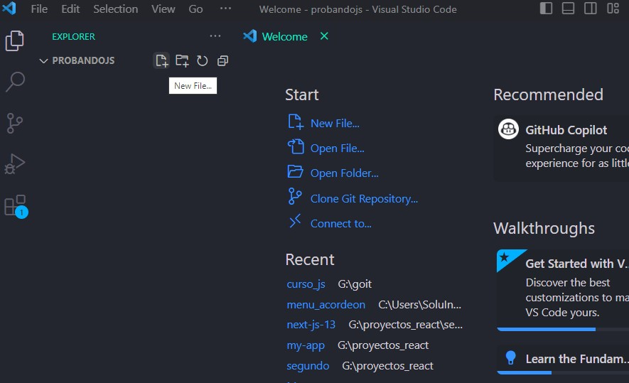
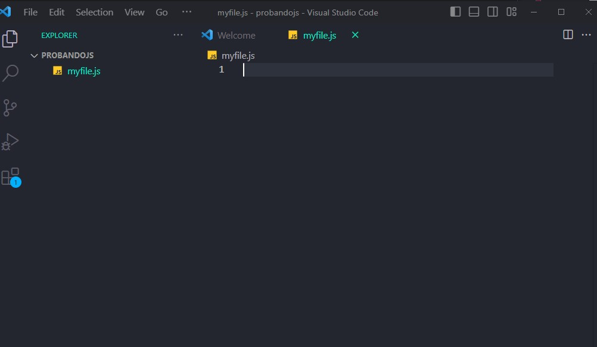

Uso De Visual Studio Code
El uso básico de Visual Studio Code (VS Code) es bastante sencillo y te permitirá comenzar a editar y ejecutar código en poco tiempo. Aquí tienes algunos pasos para comenzar a utilizarlo:
- Descarga e instalación: Lo primero que debes hacer es descargar e instalar Visual Studio Code en tu computadora desde el sitio web oficial: https://code.visualstudio.com/. El proceso de instalación es simple y solo tienes que seguir las instrucciones del instalador.
- Abrir Visual Studio Code: Una vez que hayas instalado VS Code, ábrelo desde el menú de inicio o el escritorio.
- Crear un carpeta alguna ruta (escritorio, unidad etc). Despues agrega esta carpeta a Visual Studio Code
- Crear un archivo: Para empezar a escribir código, crea un nuevo archivo en el menú "Archivo" (File) y selecciona "Nuevo archivo" (New File). También puedes usar la combinación de teclas Ctrl + N (Windows/Linux) o Cmd + N (macOS).
- Guardar el archivo: Es importante guardar el archivo antes de empezar a escribir código. Ve a "Archivo" (File) y selecciona "Guardar" (Save) o utiliza la combinación de teclas Ctrl + S (Windows/Linux) o Cmd + S (macOS). Elige una ubicación y un nombre para el archivo y guárdalo con una extensión correspondiente al lenguaje de programación que estés utilizando (por ejemplo, ".js" para JavaScript).
- Para agregar un script de JavaScript debes enlazar un archivo externo que contenga el código JavaScript utilizando el atributo src de la etiqueta <script> </script>


<!DOCTYPE html>
<html lang="en">
<head>
<meta charset="UTF-8">
<meta name="viewport" content="width=device-width, initial-scale=1.0">
<title>Document</title>
</head>
<body>
<script src="myfile.js"></script>
</body>
</html>